Content from Worked Example
Last updated on 2026-05-29 | Edit this page
Overview
Questions
- What can a typical machine learning project look like from start to finish?
- How could I approach solving a problem with machine learning in Python?
Objectives
- Understand the core structure and key the stages of a machine learning project.
- Work through a complete example, from importing data to evaluating results.
- Consider what each stage might look like for your own problem.
Time to dive right in.
We are going to jump straight into the deep end; the aim of this session is to step through a worked example. Do not worry if you do not understand everything right away; that is completely normal. This first run-through is designed to give you a high-level sense of how all the pieces fit together.
Throughout the week, we will return to each stage of this process in more detail, so that by the end of the programme you should have a much clearer and richer understanding of each section. As you work through this example, try to think about how some of these steps might apply to your own data or problem.
Introduction
Throughout the week the example dataset we are going to use is a horse blink dataset. Everyone is familiar with blinking, as you do it thousands of times a day, but the process of blinking is easy to under estimate. Blinking is a dynamic movement rather than a simple on/off event, each blink has a structure. In a single blink event closing and opening can often vary in timing, speed, and completeness. Not every blink will be the same.
The purpose of blinks are not only to protect the eye from irritation or damage, across many animals blink behaviour can change depending on context, attention, stress, fatigue, or internal state. This makes blinking more than just a reflex; it can be treated as a small behavioural signal that may reveal something about the individual or the situation they are in.
One fun example of the insights we can extract from blink behaviour is the classic “cat slow blink”. The relaxed, sleepy-looking eye narrowing blink. Research suggests that cats are more likely to slow-blink back at humans who slow-blink at them, and may even be more likely to approach someone after a slow blink interaction Humphrey et al. (2020).

So, while slow blinking at a cat is not a guaranteed friendship spell, it might be a good way of saying “I’m a cat person” in a language that cats can understand.
Scenario: Blink and you’ll miss it

A researcher, Dr Epona, studying horse behaviour is interested in whether blink patterns could provide a useful indicator of stress. Her hypothesis is that a higher ratio of half blinks to full blinks may be associated with a more stressed individual.
However, classifying a blink as a half blink or a full blink requires expertise, and there is often some disagreement between annotators. It is a significant bottle-neck in the process. However identifying when the blink occurs, although still time-consuming, is a simpler task that requires less specialist judgement. Therefore, Dr Epona wants to explore whether simple measurements taken from blink timings could help distinguish between the two blink types.
To investigate this, one of Dr Epona’s PhD student has manually annotated 23 videos and produced a tabular dataset of horse blink events.
A single blink event consists of:

For each blink, the PhD student recorded every:
- frame where the eye started closing
- frame where the eye returned to fully open
- and if the blink was a half blink or a full blink
For some of the blinks they also recorded:
- the frame where the eye reached its most closed position
- the frame where the eye started re-opening
Dr Epona now wants to know whether these timing measurements can be used to train a model to classify blink type.
What does a full blink and half blink look like?
Here are two blinks, side by side, in normal, half, and quarter speed. You may want to watch them several times to full appreciate the difference.
How could we represent this difference between a half and full blink?
If we were able to perfectly measure the distance between the horse eyelids we could plot each event as a measure of fully open and fully closed. A full blink and a half blink may look something like this:

Now we better understand the problem, how do we create a solution for this scenario?
We will follow this outline, it looks very linear but often in practice as we make discoveries they have implications on previous stages and a common theme throughout the week will be how often the process become cyclical.
Scenario Problem Definition
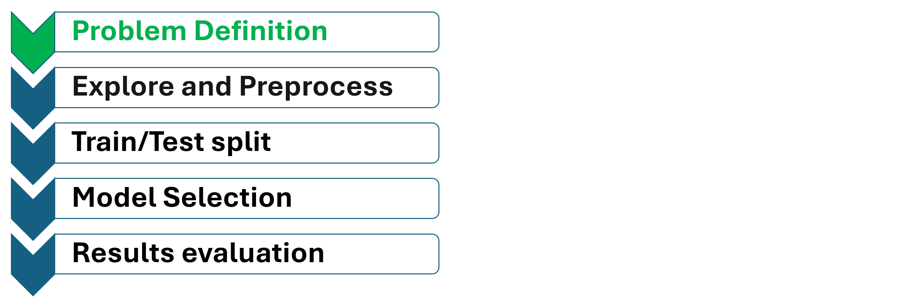
First, we need to clarify the problem:
- Output: blink type, either half blink or full blink
- Input: features created from the blink timing measurements
- Aim: reduce/replace the need for time consuming expert manual classification
Based on this, we could start with the following problem definition:
This is a useful starting point, but possibly not precise enough.
For example, what do we mean by:
- accurately?
- What specific duration features will we use?
- How good does the model need to be before it is useful? Does it need to match the level of agreement we would expect between two human annotators?
These questions matter because a good problem definition helps us decide what data we need, what features to create, which model to train, and how to evaluate whether the model is useful.
Without a clear problem definition, it is easy to drift away from the actual question we are trying to answer.
For example, if we want a model that performs similarly to human annotators, our problem definition might become:
This is now more precise, but it also reveals a gap in our data. To know whether the model performs comparably to expert annotators, we would need the same blink events labelled by more than one expert. Without those multiple expert annotations, we cannot estimate how much disagreement normally occurs between annotators to compare it to our model.
In many situations it might be implausible to collect that extra data, but that does not mean all is lost. In this example without the extra data We can still proceed with the data we have. We will just consider this worked example as a proof-of-concept study. The aim is not to build a final model, but to test whether simple blink duration features contain enough information to distinguish between half and full blinks before we commit to additional data collection.
Your task
We will use this scenario to walk through the typical stages of a machine learning project. Now that we have defined the problem, here are the next steps on our journey:
- Import and Explore the data: Load the horse blink dataset into our environment, use it and it’s metadata to better understand its structure, look for patterns, and identify any missing or unusual values.
- Preprocess the data: Engineer blink duration features from the dataset, and prepare the data for modelling.
- Train and test: Split our data into appropriate training and test splits.
- Select models: Use a simple baseline model and then try a more advanced model.
- Evaluate results: Measure how well the models classify half and full blinks, and think carefully about what conclusions we can make.
Setting up
Import Libraries
If you attended the Python introduction session, hopefully a lot of this code should look familiar. We’ll start by importing the libraries we need and then loading our dataset so we can begin exploring it.
PYTHON
# Import the libraries we need for this worked example
import glob
import matplotlib.pyplot as plt
import numpy as np
import pandas as pd
from pathlib import Path
from sklearn.ensemble import RandomForestClassifier
from sklearn.metrics import ConfusionMatrixDisplay, accuracy_score
from sklearn.model_selection import StratifiedKFold, cross_val_predict, cross_val_score
from sklearn.tree import DecisionTreeClassifier, plot_treeImport the data
Next, we need to import the CSV files into our Python session. In the AIB folder you downloaded, you should see a data folder it has a metadata file explaining the dataset. There is also a ground_truth folder containing the annotated blink event files.The file structure is shown here:
AIB26_content/
├── data/
│ ├── horseblink_metadata.csv
│ └── ground_truth/
│ ├── G-003.csv
│ ├── G-004.csv
│ └── ...The following code imports the csv files from the ground_truth folder and then prints the file names that have been found and the total number of files found.
PYTHON
# Find all CSV files in the 'ground_truth' folder
file_list = sorted(glob.glob("data/ground_truth/*.csv"))
# Print each file name so we can check what has been found
for file_name in file_list:
print(file_name)OUTPUT
data/ground_truth\G-003.csv
data/ground_truth\G-004.csv
data/ground_truth\G-005.csv
data/ground_truth\M-001.csv
data/ground_truth\M-002.csv
data/ground_truth\M-003.csv
data/ground_truth\M-004.csv
data/ground_truth\M-005.csv
data/ground_truth\M-006.csv
data/ground_truth\M-007.csv
data/ground_truth\M-008.csv
data/ground_truth\P-001.csv
data/ground_truth\P-002.csv
data/ground_truth\P-003.csv
data/ground_truth\P-004.csv
data/ground_truth\P-005.csv
data/ground_truth\P-006.csv
data/ground_truth\P-007.csv
data/ground_truth\Y-001.csv
data/ground_truth\Y-002.csv
data/ground_truth\Y-003.csv
data/ground_truth\Y-004.csvOUTPUT
Number of files: 22Data wrangling
Data wrangling is the process of getting raw data into a useful format before we analyse it or use it to train a model. In this example we have multiple files, so how should we organise them? We could inspect them separately, or consider different subsets (e.g., by horse, by date, etc.). For now we will combine them into a single pandas dataframe, we are able to do this as all the files follow the same format (this might not be the case with your dataset). The aim is to get the data into ‘usable’ shape, in our example that is fairly trivial, but the level of complexity for your current/future projects will be highly dependent on your dataset and what you are trying to achieve.
First we need to inspect the metadata file to make sure we understand the data.
PYTHON
# Load the video metadata file
metadata = pd.read_csv("data/horseblink_metadata.csv")
print(metadata[['file_name','frame_rate','file_extension']])OUTPUT
file_name frame_rate file_extension
0 data/raw_video\G-003.mov 30.00 .mov
1 data/raw_video\G-004.mp4 60.00 .mp4
2 data/raw_video\G-005.mp4 60.00 .mp4
3 data/raw_video\M-001.mov 30.00 .mov
4 data/raw_video\M-002.mp4 23.98 .mp4
5 data/raw_video\M-003.mp4 23.98 .mp4
6 data/raw_video\M-004.mp4 59.94 .mp4
7 data/raw_video\M-005.mp4 59.94 .mp4
8 data/raw_video\M-006.mp4 59.93 .mp4
9 data/raw_video\M-007.mp4 60.00 .mp4
10 data/raw_video\M-008.mp4 23.98 .mp4
11 data/raw_video\P-001.mov 30.00 .mov
12 data/raw_video\P-002.mp4 23.98 .mp4
13 data/raw_video\P-003.mp4 59.96 .mp4
14 data/raw_video\P-004.mp4 59.94 .mp4
15 data/raw_video\P-005.mp4 59.94 .mp4
16 data/raw_video\P-006.mp4 59.94 .mp4
17 data/raw_video\P-007.mp4 59.94 .mp4
18 data/raw_video\Y-001.mp4 23.98 .mp4
19 data/raw_video\Y-002.mp4 23.98 .mp4
20 data/raw_video\Y-003.mp4 60.00 .mp4
21 data/raw_video\Y-004.mp4 59.94 .mp4We can see that many of the videos have different frame rates. The data we are loading records the specific frame number for each stage of the blink, so if we want to compare blinks fairly, we need to convert these frame numbers into a common format. Converting them into seconds makes the most sense here. As we load each file into Python, we will use the metadata to apply the correct frame-rate conversion for that video by dividing the frame number by the frame rate.
PYTHON
# Keep only the columns we need to identify each file and extract frame rate
metadata = metadata[["video_id", "frame_rate"]]
# Create a list to hold the DataFrame from each ground truth file
dataframes = []
# These are the columns that contain frame numbers
frame_columns = ["Eye_starts_closing", "Eye_closed", "Eye_starts_opening", "Eye_open"]
# Read each CSV file and add its DataFrame to the list
for file_name in file_list:
# Read the CSV file
temp_df = pd.read_csv(file_name)
# Get just the video ID from the CSV file name e.g."data/ground_truth/G-003.csv" becomes "G-003"
video_id = Path(file_name).stem
# Get the horse ID from the video ID e.g."G-003" becomes "G"
horse_id = video_id.split("-")[0]
# Add ID columns
temp_df["video_id"] = video_id
temp_df["Horse_ID"] = horse_id
# Look up the frame rate for this video
matching_metadata = metadata[metadata["video_id"] == video_id]
# get the frame rate
frame_rate = matching_metadata["frame_rate"].iloc[0]
# Convert frame number columns into seconds (NaN values will stay as NaN)
for column in frame_columns:
temp_df[column] = temp_df[column] / frame_rate
# Add this DataFrame to the list
dataframes.append(temp_df)
# Combine all DataFrames into one larger DataFrame
df_blinks = pd.concat(dataframes, ignore_index=True)
# Print the total length
print("Number of events in dataframe:", len(df_blinks.index))OUTPUT
Number of events in dataframe: 609Is the seperation trivial?
First we might (reasonably) assume that half blinks are shorter than full blinks. So can we just separate blink type by the duration of the event? i.e., ” Are full blinks just longer than half blinks?“. Before we over-engineer a solution let’s explore that idea by calculating blink event duration and visualising it by blink type.
PYTHON
#calculate blink event duration
df_blinks["duration"] = df_blinks["Eye_open"] - df_blinks["Eye_starts_closing"]
plt.figure(figsize=(8, 5))
#for each blink type (full and half)
for blink_type in sorted(df_blinks["Blink_type"].unique()):
#get the data related to each blink type
blink_data = df_blinks[df_blinks["Blink_type"] == blink_type]
#visualise as a histogram
plt.hist(blink_data["duration"], alpha=0.5, label=blink_type)
plt.xlabel("Overall blink duration (seconds)")
plt.ylabel("Count")
plt.tight_layout()
plt.show()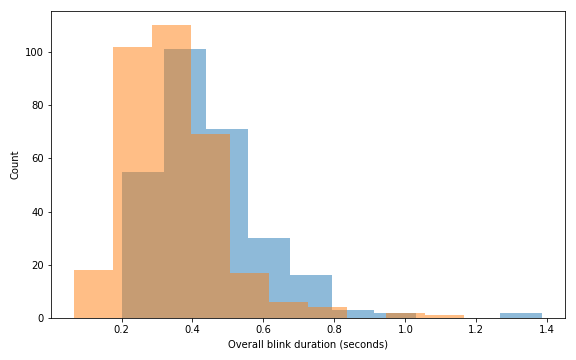
The full blink distribution extends further to the right, meaning full blinks have more longer-duration events. Half blinks are more concentrated at shorter durations. However there is a lot of overlap, both full and half blinks commonly occur around roughly the same duration range, especially around the lower-to-middle values. This means we can not simply draw a line seperating blink type based on duration. With that in mind lets continue with the process.
Pre-processing
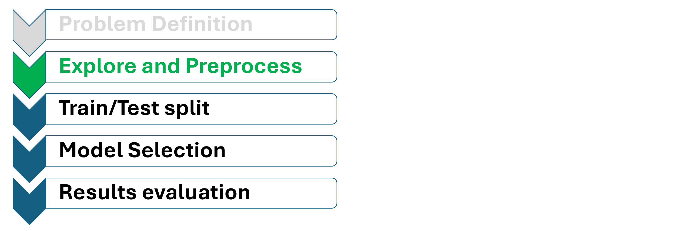
Inspect the Data
Before doing anything else, we want to understand what our data ‘looks like’. We’ll start by inspecting the first 10 rows, the column names, and checking the shape of the table to see how many rows (events) and how many columns (features) it contains.
OUTPUT
Combined dataset shape:
(609, 8)OUTPUT
Column names:
['Eye_starts_closing', 'Eye_closed', 'Eye_starts_opening', 'Eye_open', 'Blink_type', 'video_id', 'Horse_ID', 'duration']OUTPUT
First 10 rows:
Eye_starts_closing Eye_closed ... Horse_ID duration
0 0.833333 NaN ... G 0.133333
1 5.433333 NaN ... G 0.233333
2 5.800000 NaN ... G 0.200000
3 8.233333 NaN ... G 0.233333
4 9.033333 NaN ... G 0.200000
5 10.600000 NaN ... G 0.300000
6 11.100000 NaN ... G 0.333333
7 12.600000 NaN ... G 0.266667
8 14.266667 NaN ... G 0.300000
9 14.766667 NaN ... G 0.166667
[10 rows x 8 columns]The printed output shows us how many rows and columns are present in the combined dataset. The dataset contains the expected features describing a blink event, such as when the eye starts to close and when the eye opens again. We can see that there are some missing values (NaN) in the dataset.
Dealing with missing values
To check whether missing values are likely to be a problem, we can count how many appear in each column.
PYTHON
# Count how many missing values there are in each column
# isna() marks missing values as True
# sum() then counts how many True values appear in each column
missing_values = df_blinks.isna().sum()
print(missing_values)OUTPUT
Eye_starts_closing 0
Eye_closed 447
Eye_starts_opening 423
Eye_open 0
Blink_type 0
video_id 0
Horse_ID 0
duration 0
dtype: int64There are a large number of missing values that appear in the Eye_closed and Eye_starts_opening columns, which are required to calculate eye closing, eye closed, and eye opening durations.
To keep things simple, we’ll remove any rows that contain missing values. This is a convenient teaching choice, but it comes at a cost. After cleaning, we keep only 165 of the original 612 blink events. That means we are now modelling a much smaller subset of the data. Later in the week, we will look at other ways to handle missing values.
PYTHON
# Remove rows with missing values and make a copy of the cleaned result
df_blinks_c = df_blinks.dropna().copy()
# Reset the index so the cleaned DataFrame has a simple continuous row number
df_blinks_c = df_blinks_c.reset_index(drop=True)
# Check the shape after cleaning
print("Post-cleaning shape:", df_blinks_c.shape)OUTPUT
Post-cleaning shape: (162, 8)Visualise a blink
We can take a single blink event and visualise it. This will give us a better understanding of the features we could extract from each event.
PYTHON
# Take the first event and only the duration features
blink_event = df_blinks_c.iloc[0, :4]
# Plot the blink event against the known state (0 is open 1 is closed)
plt.figure(figsize = (7,4))
plt.plot(blink_event, [0, 1, 1, 0], marker="o")
# Label and show the plot
plt.yticks([0, 1], ["Eye open", "Eye closed"]);
plt.xlabel("Seconds")
plt.ylabel("Eye state")
plt.text((blink_event.iloc[0] + blink_event.iloc[1]) / 2, .5, "Eye closing")
plt.text((blink_event.iloc[2] + blink_event.iloc[3]) / 2, .5, "Eye opening")
plt.show()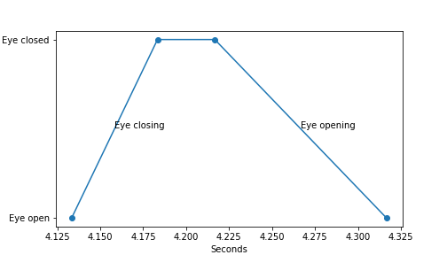
Feature Engineering
Feature engineering is the process of creating useful input variables, called features, from the raw data. In our example the specific frame number is not that useful to understanding the structure. We want to convert the frames into durations which can be compared between events. Let’s go ahead and create our measures.
From the raw data we calculate:
- Closing duration: the number of frames it takes for the eye to fully close.
- Closed duration: the number of frames the eye is closed.
- Opening duration: the number of frames the eye takes to fully open from closed.
Half blinks, by their definition, should not have a closed duration
Be aware what closed duration actually represents for half blinks is the number of transitional frames where the eyelid has stop closing before it starts opening.
After we generate the features we can print summary statistics for each duration measure as a first check.
PYTHON
# Create new columns for each stage of the blink event
df_blinks_c["closing_duration"] = df_blinks_c["Eye_closed"] - df_blinks_c["Eye_starts_closing"]
df_blinks_c["closed_duration"] = df_blinks_c["Eye_starts_opening"] - df_blinks_c["Eye_closed"]
df_blinks_c["opening_duration"] = df_blinks_c["Eye_open"] - df_blinks_c["Eye_starts_opening"]
# Show summary statistics for each new duration column
print("Summary of closing duration:\n", df_blinks_c["closing_duration"].describe())OUTPUT
Summary of closing duration:
count 162.000000
mean 0.136370
std 0.074402
min 0.033367
25% 0.083406
50% 0.125104
75% 0.166750
max 0.550551
Name: closing_duration, dtype: float64OUTPUT
Summary of closed duration:
count 162.000000
mean 0.044019
std 0.038372
min 0.016667
25% 0.016683
50% 0.041701
75% 0.041701
max 0.266934
Name: closed_duration, dtype: float64OUTPUT
Summary of opening duration:
count 162.000000
mean 0.290349
std 0.129756
min 0.033367
25% 0.208507
50% 0.283641
75% 0.345931
max 0.884218
Name: opening_duration, dtype: float64Visualisation
To gain further insight, we can visualise these durations to inspect their distributions.
PYTHON
# Choose the features we want to visualise
distribution_features = ["closing_duration", "closed_duration", "opening_duration"]
# Find one shared x-axis range across all three features
x_min = df_blinks_c[distribution_features].min().min()
x_max = df_blinks_c[distribution_features].max().max()
# Create one shared set of bins so the histograms are easier to compare
shared_bins = np.linspace(x_min, x_max, 51)
plt.figure(figsize=(10, 12))
# Loop through the features and make one histogram for each
for i, feature in enumerate(distribution_features, start=1):
plt.subplot(len(distribution_features), 1, i)
df_blinks_c[feature].hist(bins=shared_bins)
plt.xlim(x_min, x_max)
plt.xlabel(feature)
plt.ylabel("Count")
plt.tight_layout()
plt.show()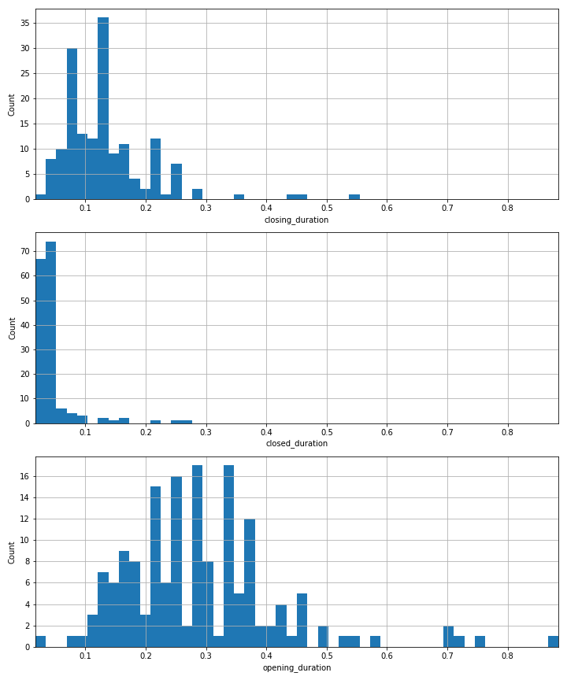
We can see that all three blink-phase features are right-skewed (a data distribution where the tail extends toward higher values on the right side), meaning that most blink events are quite short, with a smaller number that last longer. This suggests that short blink phases are common, but there still looks to be some meaningful variation in the dataset.
The closed duration values are very concentrated near the lower end, suggesting that the eye is usually fully closed for only a short period of the blink. The closing duration values are still mostly small, although there are a few longer events, and the opening duration values appear the most spread out, which suggests that this phase may vary more between blink events.
Overall, these distributions suggest that the blink phases are not all behaving in exactly the same way. This is useful, because if different blink types tend to have different timing patterns, then these features may contain information that can help a machine learning model distinguish between half blinks and full blinks.
Would you consider any of the points displayed in the histograms as outliers?
For now it’s just something to think about, tomorrow we look at this in more detail.
Checking Feature Distributions by Blink Type
We can explore feature distributions by blink type to check whether the feature values differ between full and half blinks. If the distributions look different, it suggests that these features may contain useful information for predicting blink type. This does not prove that the features will work well in a model, but it gives us a reason to test them further.
PYTHON
# Choose the features we want to visualise
distribution_features = ["closing_duration", "closed_duration", "opening_duration"]
# Find one shared x-axis range across all three features
x_min = df_blinks_c[distribution_features].min().min()
x_max = df_blinks_c[distribution_features].max().max()
# Create one shared set of bins
shared_bins = np.linspace(x_min, x_max, 51)
plt.figure(figsize=(10, 12))
# Loop through each feature
for i, feature in enumerate(distribution_features, start=1):
plt.subplot(len(distribution_features), 1, i)
# Plot each blink type on the same histogram
for blink_type in df_blinks_c["Blink_type"].unique():
subset = df_blinks_c[df_blinks_c["Blink_type"] == blink_type]
plt.hist(subset[feature], bins=shared_bins, alpha=0.5, label=blink_type)
plt.xlim(x_min, x_max)
plt.xlabel(feature)
plt.ylabel("Count")
plt.legend(title="Blink type")
plt.tight_layout()
plt.show()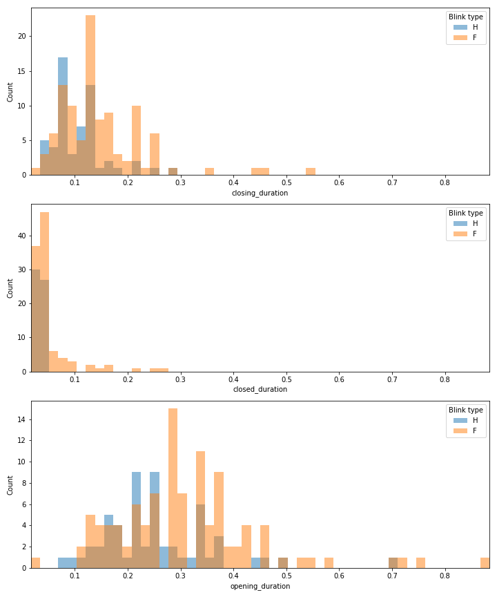
The distributions suggest that blink duration features may contain useful information for distinguishing full and half blinks, particularly opening duration and closing duration. However, there is still clear overlap between the classes, so these features may not perfectly separate blink types. We can also see that there are more occurrences of full blink than half blinks; we need to explore that imbalance further.
To check how many full blinks and half blinks are present in the dataset we can visualise the numbers as a bar plot. This gives us a quick sense of the balance of our target classes before we move on to modelling.
PYTHON
# Count how many examples we have of each blink type
print(df_blinks_c["Blink_type"].value_counts())OUTPUT
Blink_type
F 105
H 57
Name: count, dtype: int64PYTHON
# Plot the class counts as a bar chart
df_blinks_c["Blink_type"].value_counts().plot(kind="bar", color=["tab:blue", "tab:orange"])
plt.ylabel("Count")
plt.show()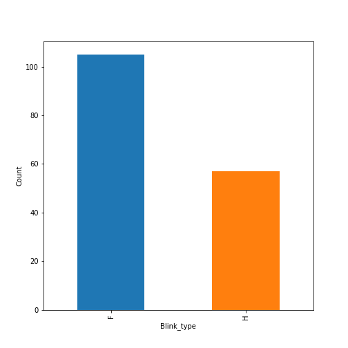
The dataset contains more full blinks than half blinks, the classes are not perfectly balanced. The imbalance is not extreme, but it is still something to consider carefully, especially because the dataset is now fairly small after cleaning.
Why is imbalance significant?
Class imbalance is important because it is common in datasets and can make model performance harder to interpret.
In our blink dataset, there are more full blinks than half blinks:

If a model always predicted the most common class,
Full blink, it would get 107 out of 165 examples correct.
That gives an accuracy of about 65%, even though the model has not
learned anything useful about the difference between full and half
blinks.
This is why accuracy can be misleading when the classes are imbalanced. A model may look reasonably good overall while still performing poorly on the class we care about.
This problem becomes even more serious when the imbalance is larger. There are two main places where we need to think about imbalance:
- When we split the data for training and testing
- When we evaluate the model
We will look at both of these in this example and in more detail during the week.
Training & Test split
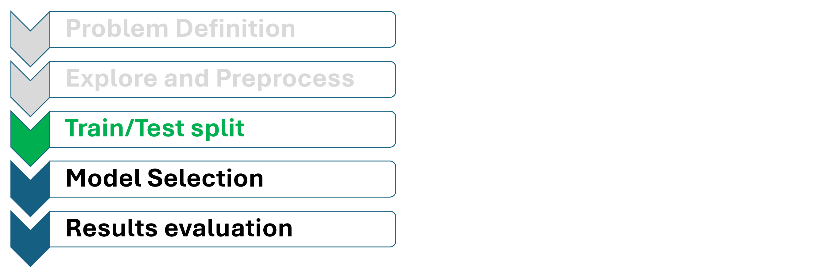
A train/test split is used to assess whether our model can make good predictions on data it has not ‘seen’ before. We train the model using a part of the dataset, called the training set, and then test it on a separate part, called the test set. The test set gives us a way to check whether the model has learned useful patterns that might work on new examples.
A common analogy is revising for an exam: the training set is like the practice questions you learn from, while the test set is like the real exam questions. Doing well on the practice questions is useful, but the real value is if you can answer new questions correctly.
First we split the dataset into two separate components:
features (X) and labels
(‘y’). The features (X) include all the measured
characteristics (the durations) of each blink event that will be used as
input to the machine learning model. The labels (y) consist
solely of the Blink_type column, which represents the
target variable we want our model to predict.
PYTHON
# Separate the input features from the label column
X = df_blinks_c[["closing_duration", "closed_duration", "opening_duration"]].copy()
y = df_blinks_c["Blink_type"]Now we need to split the data into training and test sets. The training set is the data the model learns from. The test set is kept separate and is used to check how well the model performs on data it has not seen before.
A simple approach would be to use a random split, for example 80% for training and 20% for testing. However, with a small dataset this can be unreliable. We might accidentally create a training set with very few half blinks, or a test set that is easier or harder than expected. This would make the model’s performance depend too much on one particular random split.

To get a more reliable estimate, we can use k-fold cross-validation. This splits the data into several smaller parts, called folds. The model is trained several times: each time, one fold is used as the test set and the remaining folds are used for training. This means each example gets used for testing once, giving us a better overall view of model performance.

Because we have different blink types, we can use stratified k-fold cross-validation. This keeps the proportion of each blink type similar in each fold, making the training and test sets more representative. Being methodical with the way we split our test and training sets gives us more confidence that the results are not just due to one lucky or unlucky split.
 Lets take a look at stratified
K-fold cross-validation in Python. We will created 5 folds and then look
at the balance and the index of each placed in that fold.
Lets take a look at stratified
K-fold cross-validation in Python. We will created 5 folds and then look
at the balance and the index of each placed in that fold.
PYTHON
# Create a stratified k-fold cross-validation splitter
# This keeps the proportion of blink types similar in each fold
k = 5
skf = StratifiedKFold(n_splits=k, shuffle=True, random_state=0) # shuffle means we do not keep original data order
# Print the row indexes used as the test set in each fold
for fold, (train_index, test_index) in enumerate(skf.split(X, y), start=1):
print(f"Fold {fold} test indexes:")
print(test_index)OUTPUT
Fold 1 test indexes:
[ 6 7 15 19 20 39 43 46 52 63 69 73 77 78 100 109 111 114
115 117 120 124 126 127 131 138 141 143 149 150 153 156 157]
Fold 2 test indexes:
[ 9 12 16 23 26 29 32 36 37 48 53 58 65 68 75 79 80 85
88 90 92 101 103 112 129 133 135 139 145 147 148 152 161]
Fold 3 test indexes:
[ 2 4 5 8 11 21 22 30 31 34 41 44 54 56 67 72 74 81
82 87 94 102 108 110 116 118 130 134 136 140 142 154]
Fold 4 test indexes:
[ 0 3 14 17 25 28 33 38 42 51 61 62 66 71 83 89 91 96
98 104 106 107 119 121 122 128 132 137 144 146 151 160]
Fold 5 test indexes:
[ 1 10 13 18 24 27 35 40 45 47 49 50 55 57 59 60 64 70
76 84 86 93 95 97 99 105 113 123 125 155 158 159]Now that our data is ready for training and testing we need to pick a model to train.
Model Selection & Training
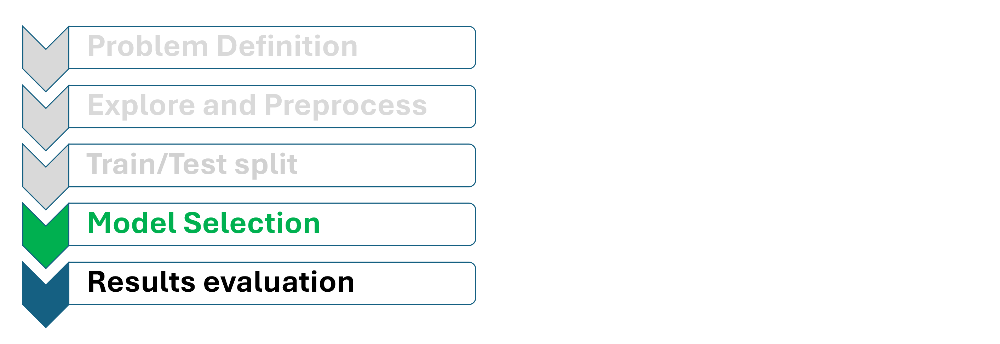
The first model we will use is a decision tree, we will use it as a baseline model because it’s simplicity provides a high level of interpretability and explainability. We might want to start gaining an understanding of which features are important for making predictions and in which way they are used. A decision tree naturally reveals this by showing us the sequence of decisions (feature splits) it makes, along with the thresholds it uses. This makes it easy to see which feature is most influential in classifying the blink type. As a result, using a decision tree helps us both establish a benchmark for predictive accuracy and gain direct insights into the factors driving our classifications.
PYTHON
# Create a decision tree
tree_model = DecisionTreeClassifier(random_state=0)
tree_predictions = cross_val_predict(tree_model, X, y, cv=skf)A decision tree classifier learns from the training
data by looking for simple rules that separate the blink types. For
example, it might learn that blinks with a longer
closed_duration are more likely to be full
blinks, while shorter ones may be more likely to be
half blinks. The tree turns these patterns into a set
of yes/no questions.
When building the tree, the model chooses questions that make the groups as homogeneous as possible. By default, scikit-learn uses a measure called Gini impurity. A group has low Gini impurity when most examples in it belong to the same class. So, the tree tries to make splits where the resulting groups are mostly full blinks or mostly half blinks.
DecisionTreeClassifier(random_state=0)In a Jupyter environment, please rerun this cell to show the HTML representation or trust the notebook.
On GitHub, the HTML representation is unable to render, please try loading this page with nbviewer.org.
Parameters
| criterion | 'gini' | |
| splitter | 'best' | |
| max_depth | None | |
| min_samples_split | 2 | |
| min_samples_leaf | 1 | |
| min_weight_fraction_leaf | 0.0 | |
| max_features | None | |
| random_state | 0 | |
| max_leaf_nodes | None | |
| min_impurity_decrease | 0.0 | |
| class_weight | None | |
| ccp_alpha | 0.0 | |
| monotonic_cst | None |
PYTHON
# Plot the first 3 levels
plt.figure(figsize=(14, 8))
plot_tree(tree_model, feature_names=X.columns, class_names=tree_model.classes_, filled=True, max_depth=3)
plt.title("Decision tree visualisation")
plt.show()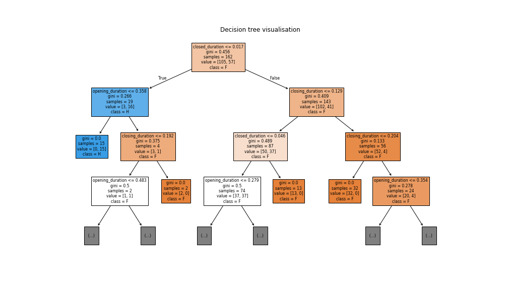

Once the tree has been built, we use it to make predictions on the test data. This is data the model has not seen during training, so it gives us a better idea of how well what the model has learnt is applicable to new examples.
For our second model we will use a random forest. A random forest is built from many decision trees rather than just one. If we consider a decision tree as a trained expert a random forest is like a council of experts. Each tree gives its own opinion, and the final prediction is decided by majority vote.
PYTHON
# Create a random forest
# n_estimators controls how many decision trees are used in the forest
forest_model = RandomForestClassifier(
# Use 500 trees in the forest.
n_estimators=100,
# Do not use bootstrap resampling.
bootstrap=True,
# Keeps the result reproducible each time we run the code.
random_state=0
)
forest_predictions = cross_val_predict(forest_model, X, y, cv=skf)We use a random forest because it is usually more robust than a single decision tree. A single tree can sometimes rely too heavily on one particular split in the data, which can make it sensitive to small changes in the training set. A random forest reduces this problem by building lots of slightly different trees and combining their results. Each tree learns its own set of rules for separating the blink types, based on the features. The analogy here is that different trees can learn different aspects of the underling relationships that a single tree may can not do in a single structure. A useful way to think about this is that each tree gets a slightly different view of the problem. One tree might focus more on the closed duration, while another might make better use of opening duration. By combining these different views, the random forest can often make a more reliable prediction than a single tree on its own.
When the model is given a new blink example, each tree makes its own prediction. Some trees may predict Full blink (F), while others may predict Half blink (H). The random forest then combines these predictions using a majority vote. The class with the most votes becomes the final prediction. This means the model is not relying on just one tree. Instead, it uses the combined judgement of many trees, which often gives more stable and reliable predictions. A trade-off is that explainability becomes more difficult. With a single decision tree, we can follow one sequence of decisions from start to finish. In a random forest, we may be combining predictions from hundreds or even thousands of trees, so it becomes more challenging to track exactly how and why a final decision was made.

As with the decision tree, we test the random forest using data it has not seen during training. This lets us check how well the model generalises to new blink examples, rather than only checking how well it performs on the data it learned from.
Results and Evaluation
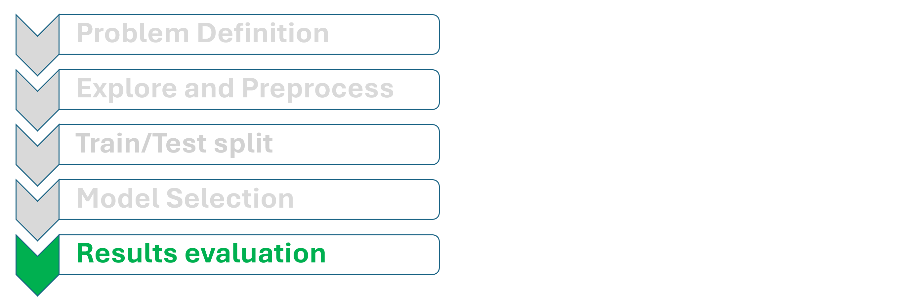
How do we know how well our model is performing?
First, let’s think about what performance might look like for this problem. We have two classes to predict: full blink and half blink. Earlier, we saw that a lazy model can get reasonable accuracy simply by always predicting the most common class.
Now let’s consider an even simpler baseline: a blind model. This model does not look at the data at all. Instead, it randomly chooses between the two classes, like tossing a coin. This gives us another simple point of comparison before we evaluating our actual machine learning models.

The blind model does not consider data nor learning it just randomly guesses between the two classes. Over enough predictions we would expect this to result approximately 50% accuracy.
The blind model tells us what performance looks like if the model is just guessing. The lazy model tells us what performance looks like if the model always predicts the most common class. Our real models should do better than both of these baselines before we can be confident that they are learning useful patterns.
With this in mind lets look at the accuracy of our two models.
PYTHON
# Calculate the overall accuracy
tree_accuracy = accuracy_score(y, tree_predictions)
print("Decision tree accuracy:", tree_accuracy)OUTPUT
Decision tree accuracy: 0.7098765432098766PYTHON
# Calculate the overall accuracy
forest_accuracy = accuracy_score(y, forest_predictions)
print("Random forest accuracy:", forest_accuracy)OUTPUT
Random forest accuracy: 0.7345679012345679Neither models accuracy is mind blowing in the context of our understanding of the expected accuracy but we see a fair improvement from moving from the decision tree to the random forest.
To better understand how the models predict each class, we can display the results as a confusion matrix. This highlights where the model makes correct predictions and where it confuses one class for another.

Note: Confusion matricies may not always take this format, make sure you read the axies carefully.
PYTHON
fig, ax = plt.subplots(figsize=(6, 5))
ConfusionMatrixDisplay.from_predictions(y, tree_predictions, labels=["F", "H"], display_labels=["Full blink", "Half blink"], ax=ax);
# Add labels to each square
box_labels = [["Correct", "Wrong"],["Wrong", "Correct"]]
for row in range(2):
for col in range(2):
ax.text(col,row + 0.25, box_labels[row][col], ha="center", va="center", fontsize=12, fontweight="bold")
plt.title("Decision tree confusion matrix")
plt.tight_layout()
plt.show()PYTHON
# Plot the confusion matrix
fig, ax = plt.subplots(figsize=(6, 5))
ConfusionMatrixDisplay.from_predictions(y, forest_predictions, labels=["F", "H"], display_labels=["Full blink", "Half blink"], ax=ax);
# Add labels to each square
box_labels = [["Correct", "Wrong"],["Wrong", "Correct"]]
for row in range(2):
for col in range(2):
ax.text(col,row + 0.25, box_labels[row][col], ha="center", va="center", fontsize=12, fontweight="bold")
plt.title("Decision tree confusion matrix")
plt.tight_layout()
plt.show()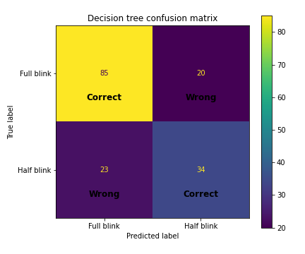
Both confusion matrices show the same general pattern: the models are better at identifying full blinks than half blinks. Most full blinks are correctly classified, but a higher percentage of half blinks are still predicted as full blinks. This suggests that the blink duration features contain useful information, but the two classes overlap enough that the model cannot cleanly distinguish them every time.
Framing our worked example
Now would be a good time to understand the framing of our worked example. What we mean by that is defining what kind of machine learning problem we have performed so we can communicate it clearly, both for ourselves and to others who understand this machine learning terminiology.
🕒 Terminology Time
Let’s clarify two important terms that we have already seen:
Features
Features are the individual pieces of information that you use to help make predictions. They are the inputs to your model.
Examples:
- The closing duration of a blink event
- The length and width of flower petals
- A person’s age, height, and cholesterol level
- A pixel value
Labels
Labels are the the known target value associated with each example in the training data, we can often think of them as the answers you’re trying to predict or explain.
Examples:
- The type of blink (half blink, full blink)
- The type of flower (iris setosa, iris virginica, etc.)
- Whether a patient has a disease
- Is this image a cat?
But what if we didn’t have labels in the dataset?
It is common to have a dataset that has no obvious y. This means we either need to consider if any of the features would make a valuable and sensible y or we would consider to unsupervised learning rather than supervised learning.
What is Supervised and Unsupervised Learning?
The worked example we have just completed is a supervised learning example. We had known target values for training examples that we used the features to try and predict. The goal was to train a model that learns the relationship between the inputs and the outputs so it can predict the target label for new data.
Supervised learning is typically used when:
- You have data that includes both inputs (features) and known outputs (labels).
- You want to see how well you can predict a known outcome from the inputs.
Unsupervised Learning is typically used when:
You do not have known target labels. The goal is to explore the structure of the data itself, for example by finding groups, simplifying complex datasets, or identifying useful patterns.
There are two very common subclasses of supervised learning. In
our example we were predicting a specific binary class (half-blink,
full-blink) but we could also be trying to predict a continous value
(e.g., the height of a person). These two types of problem are labeled
as categorical or continuous.
🕒 Terminology Time
| Label Type | Description | Example Values |
|---|---|---|
| Categorical | Data divided into distinct groups or categories |
['Yes', 'No'] or
['UK', 'France', 'Spain']
|
| Continuous | Numeric data that can take on any value within a range (measurable quantities) |
3.5, 98.6, 12.0,
4.2
|
So, we can describe the problem we just looked at as a
supervised binary classification problem.
If we are dealing with unsupervised learning, we have a different common split:
🕒 Terminology Time
| Unsupervised Task | Description | Typical Goal |
|---|---|---|
| Clustering | Grouping data points based on similarity (no predefined labels) | Discover hidden groupings or patterns |
| Dimensional Reduction | Simplifying data by reducing the number of features | Visualisation or Understanding |
“Simply, are we trying to group similar things, or reduce complexity in our dataset?”
If you want to find groups or clusters in your data.
Example: - If we just had closing duration and opening duration we could look for distinct groups within the data.
Clustering is used when:
- You have unlabelled data.
- You suspect some structure or grouping exists and want the algorithm to discover it for you.
Dimensionality Reduction
You want to simplify your data by reducing the number of features, while preserving important structures or relationships.
Example: - You have 100’s of features about petals you believe that some a redundant and you want to reduce the overall number of features.
Dimensionality reduction is used when:
- Your dataset has many features, and you want to:
- Visualise it more easily
- Reduce noise or redundancy
- Speed up future modelling
You can think of it as compressing data while keeping the most important patterns.
These two sections are not mutually exclusive you may want to reduce dimensionality and then look for patterns. Often a problem might start with unsupervised learning to create labels that you then go on to use in supervised learning. The categories are broad and there are aspects of machine learning not covered here. Treat this as a framework to be able to discuss about machine learning problems.

Unsupervised example
In this example, imagine that we only have the blink timing features. We know how long each blink took to close and open, but we do not know whether each event was labelled as a full blink or a half blink.
Looking for structure without labels
First, let’s visualise two of our engineered features:
- closing_duration
- opening_duration
At this stage, we will not use Blink_type. We are simply asking: Do the blink events naturally form any obvious groups?
PYTHON
plt.figure(figsize=(7, 5))
# Create a scatter plot using only the duration features
plt.scatter(df_blinks_c["closing_duration"], df_blinks_c["opening_duration"], alpha=0.7)
plt.xlabel("Closing duration")
plt.ylabel("Opening duration")
plt.tight_layout()
plt.show()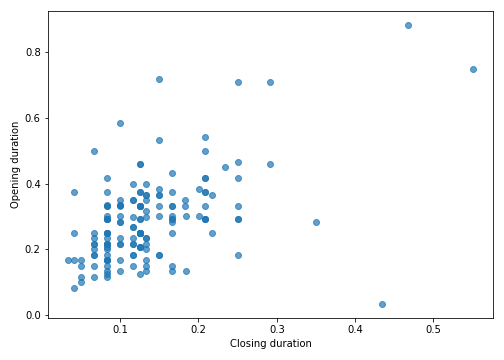
In this plot, each point represents one blink event. The position of the point is based only on the timing features. We are not using the blink type labels here, so the plot shows what we might see if we had an unlabelled dataset.
We notice that the points do not split into two very clear groups. Instead, many of the blink events sit in a shared region, with some points spread further away. This suggests that there is some variation in the blink timing features, but there is not an obvious visual separation into two distinct clusters.
This is an important part of unsupervised exploration. Sometimes the data forms clear groups. Sometimes it does not. Both outcomes are useful, because they help us understand whether the features we have created contain strong structure.
Adding the labels back for interpretation
Now let’s make the same plot again, but this time we will use the known blink type to colour the points.
This no longer works as an unsupervised approach anymore, because we are now using the labels for interpretation. However, it is a useful teaching step. It lets us ask: If we hide the labels during exploration, do the natural patterns in the data line up with the labels we already know?
PYTHON
# Create a scatter plot and colour the points by blink type
plt.figure(figsize=(7, 5))
for blink_type in sorted(df_blinks_c["Blink_type"].unique()):
# Keep only rows for one blink type
blink_data = df_blinks_c[df_blinks_c["Blink_type"] == blink_type]
# Plot this blink type
plt.scatter(blink_data["closing_duration"], blink_data["opening_duration"], alpha=0.7, label=blink_type)
plt.xlabel("Closing duration")
plt.ylabel("Opening duration")
plt.legend(title="Blink type")
plt.tight_layout()
plt.show()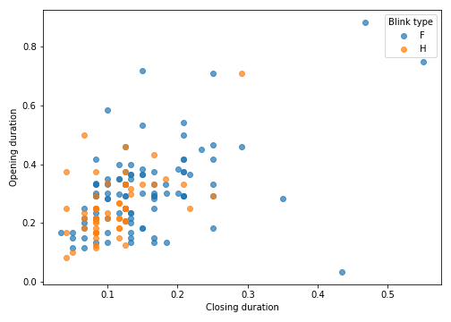
Now we can see how the known full and half blink labels match the visible structure in the data.
If full blinks and half blinks formed two clearly separate clouds of points, that would suggest these two duration features are enough to distinguish the blink types quite easily. However, the colours overlap, that tells us the problem is more difficult. It means that some full and half blinks have similar closing and opening durations.This supports what we saw in the supervised learning section: the duration features contain some useful information, but they do not perfectly separate full blinks from half blinks.
Hopefully this gives you an insight into how we could approach a problem when we do not have labels. We can begin by visualising the features, looking for structure, and asking whether any patterns might correspond to meaningful biological or behavioural differences.
Conclusion
Overall, this worked example shows that blink timing features can be used to build a model that makes some separation between full blinks and half blinks. The model performs better than a simple baseline, which suggests that duration does contain useful information. However, the results also show clear limitations: full and half blinks overlap in their duration patterns, so timing alone is unlikely to fully capture the difference between them.
This is not hugely surprising. The key difference between a full blink and a half blink is probably not only how long the blink lasts, but how far the eye closes during the blink. A half blink may have a similar duration to a full blink, but the eyelid may not travel as far. This means that our current features are useful, but they are only describing part of the movement.
Fortunately, we still have the raw video data. This means we can go back to the original source and start thinking about richer features, such as how much the eye closes, how the shape of the eye changes, or how the eyelid moves through time. In tomorrow’s session, we will begin to explore how raw data can be transformed into more informative features for machine learning.
Summary of learning outcomes
| Topic | What you have learnt | Why it matters |
|---|---|---|
| Machine learning workflow | You learnt that a typical machine learning project involves defining a problem, importing data, exploring it, preprocessing it, engineering features, training models, and evaluating results. | It gives you a practical structure you can reuse in your own projects. |
| Metadata | You learnt that understanding your data is key to using it correctly. | Without context, it is easy to interpret your data incorrectly. |
| Data wrangling | You learnt how to take multiple files and load, combine, and enrich them. | Real datasets are often messy, so you need to know how to organise them into a usable format. |
| Preprocessing | You learnt that inspecting and handling data correctly is important before modelling. | Poor-quality data can affect feature creation and model training, so it needs to be checked and cleaned before analysis. |
| Feature engineering | You learnt that raw measurements can be transformed into more useful features. | Models usually learn from features, so feature engineering is a key part of making raw data useful. |
| Exploratory visualisation | You learnt how to use plotting to inspect distributions, class overlap, and possible outliers. | Visualisation is a major tool for understanding your data before modelling. |
| Class imbalance | You learnt that datasets can contain imbalanced classes, and that this needs to be considered during evaluation. | Results such as accuracy can be misleading when one class appears more often than another. |
| Train/test thinking | You learnt that models should be evaluated on data they did not train on, so we can test whether they generalise to new examples. You also learnt practical ways to do this in Python. | This helps you judge a model fairly based on how well it handles unseen data. |
| Machine Learning Models | You learnt how to implement decision trees and random forests, and you now have an understanding of how decisions are made in each model. | This gives you both an interpretable baseline model and a more advanced model to use in your own projects. |
| Model evaluation | You learnt that accuracy and confusion matrices can be used to assess how well models classify full and half blinks. | Evaluation shows not only how often the model is correct, but also which mistakes it makes. |
| Confusion matrices | You learnt how to build and interpret confusion matrices, including how they show correct and incorrect predictions for each class. | They are a useful tool for evaluating your models and understanding your results. |
| Problem framing | You learnt a framework and terminology for describing your machine learning problem. | Being able to confidently describe your problem, and understand others talking about machine learning, is an important step. |
Key Points
- A typical machine learning project follows a structured pipeline: data exploration, cleaning, preprocessing, model selection, training, and evaluation.
- Even simple models like decision trees can provide valuable insights into which features drive predictions, making them excellent for building intuition and explainability.
- Don’t worry if you didn’t follow every detail. Remember, this was about gaining a high-level overview of the entire process, so that when we dive into each section in detail later, you’ll have the context to understand how it all fits together.
Content from Problem Definition
Last updated on 2026-05-29 | Edit this page
Overview
Questions
- How can I determine what type of problem my data is suited for?
- How do I know what is an appropriate question for a machine learning model to answer?
- How can I clearly define a machine learning problem?
Objectives
- Articulate a clear and measurable AI/ML problem definition
- Identify whether a task is supervised or unsupervised
- Distinguish between classification and regression tasks
- Distinguish between clustering and dimensionality reduction tasks
- Use appropriate machine learning terms when framing a problem
Introduction
In the previous session, we briefly explored creating a problem definition for our worked example.
Now, we ask: how do we make sure our problem defintion is suitable?
It is important to realise that before we start building a solution, we first need to define the problem.
A good starting point is accurately defining the problem. We can begin by asking…
How Can We Articulate the Problem?
A ML problem should:
- be Clear: The question should use precise, unambiguous language that explicitly defines the objective.
- be Measurable: The problem should involve inputs or outputs that are well-defined, observable, and quantifiable.
- be Feasible: The required data should exist (or be collectible), be accessible, and be sufficient in both quality and quantity.
- add Value: The answer to the question should aim to generate some value to offset the resource it is consuming.
This is not an exhaustive checklist. Other factors, such as the scope, reproducibility, or specific project priorities, may also be important. If you’re unsure, don’t hesitate to ask for guidance.
💡 “Ethical consideration should not be treated as an optional technical requirement”
A project might satisfy all of your criteria and still be inappropriate or harmful.. For that reason, ethical reflection should be treated as an ongoing consideration throughout your project. We will spend dedicated time during the week to emphasise how important Ethics is in AI.
We can consider some examples to better understand why these factors are important.
“Can we use AI to look at diseases in crops?”
- The task is vague – “look at” doesn’t describe a specific ML
task.
- “Diseases in crops” is broad – which disease? which crops?
- It’s difficult to interpret and action meaningfully.
- This is not a bad starting place, but it is a bad finishing place.
-“Can we predict the presence of leaf rust in wheat crops using drone image data?”
Why it’s better:
- Specifies the task: predict the presence of a disease.
- Identifies a specific disease (leaf rust) and crop
(wheat).
- Defines the data source (drone image data).
- These elements narrow the focus, resulting in a much clearer
objective.
“Can we predict how bad a patient’s tumour is?”
- “bad” does not have a precisely defined range
- If the output lacks consistent, measurable categories then it is unsuitable for model training
- “Can we classify tumour types from MRI scans (benign vs malignant)?”
Why it’s better:
- Defines a binary, clearly labelled classification task.
- Uses structured input data (MRI scans).
- Aligns with typical medical data used in supervised learning.
📝 Breakout Task: Reflect on Your Problem Definition
- Discuss in your group:
- What was your problem definition before today?
- Can you see any areas where your definition could be refined?
- What was your problem definition before today?
Be prepared to share one insight or a question with the group.
How do I know if I want data analysis, machine learning, or AI? (and what is the difference?)
These terms are often used together, and sometimes used interchangeably, but they do not all mean exactly the same thing.
At a simple level:
Data analysis is usually when we want to increase our understanding of the data you already have. You might summarise it, visualise it, compare groups, look for patterns, or test whether relationships exist.
Machine learning is usually about building a system that can learn patterns from data and use those patterns to make predictions, assign labels, detect structure, or support decisions on new data.
Artificial intelligence (AI) is generally a broader term. It can include machine learning, but it can also include other approaches that aim to make computers behave in ways we might describe as intelligent, such as reasoning, planning, search, rules-based systems, or generative systems. Often it is used to describe LLM’s (i.e., Co-pilot, ChatGPT)
A useful way to think about it is:
- data analysis helps you understand
- machine learning helps you predict or automate
- AI is the wider area that may include machine learning along with other methods
These boundaries are not always strict, and real projects often involve more than one of these. For example, you may begin with data analysis to understand your dataset, then use machine learning to make predictions, and later describe the overall system as part of an AI workflow.
A simple way to tell the difference
Ask yourself what you are trying to do.
If you are mainly trying to answer questions like:
- What happened?
- What patterns can I see?
- How do groups or variables differ?
then you are probably starting with data analysis.
If you are mainly trying to answer questions like:
- Can I predict an outcome for a new case?
- Can I classify this image, text, or sound automatically?
- Can I detect patterns that would be difficult to define manually?
then machine learning may be useful.
These are not completely separate categories. Many real projects begin with data analysis to understand the data, check quality, and define the problem more clearly before deciding whether machine learning is appropriate.
If you are talking more broadly about systems that make decisions, generate content, reason over information, or combine multiple techniques, then you may be discussing AI.
Why this distinction matters
Not every problem needs machine learning.
Sometimes the most useful and appropriate outcome is a clear analysis of the data, rather than a model. In many projects, the immediate need is to understand what is in the dataset, whether it is reliable, and whether it can support the question you want to answer.
For example, you may want to:
- summarise survey responses
- compare outcomes between groups
- measure change over time
- explore relationships between variables
- identify unusual values or possible data quality problems
- produce figures or tables to support decision-making
These are all important data tasks, but they do not necessarily require machine learning.
At the same time, it is still worth understanding how machine learning might help. Even if your current goal is data analysis, learning how machine learning problems are framed can help you recognise when machine learning may become useful later.
Data analysis and machine learning often work together
It is often helpful to think of data analysis and machine learning as related tools rather than competing choices.
Data analysis is often the place to start. It helps you:
- understand what your variables mean
- check whether the data is complete and sensible
- identify patterns, gaps, bias, or noise
- decide whether modelling is realistic
- clarify what question you are really trying to answer
Machine learning may then become useful if your goal changes from understanding the data you have to doing something more automated with it, such as:
- predicting a future outcome
- classifying new examples
- clustering similar examples
- detecting patterns at scale
- building a system that can be reused on new data
In other words, data analysis often helps you decide whether machine learning is appropriate, and machine learning often depends on good data analysis to work well.
A useful question to ask
Before deciding what approach you need, ask:
Am I mainly trying to understand the data I already have, or am I trying to predict something unknown from it?
If you are mainly trying to understand the data you already have, data analysis may be the best starting point.
If you are trying to predict, classify, automate, or generalise to new data, machine learning may be helpful.
If you are working with a broader system that combines decision-making, language, generation, reasoning, or multiple computational techniques, you may be working in the wider area of AI.
Let’s consider an Example
Consider the difference between these questions:
How many patients missed their follow-up appointment? This is mainly a data analysis question. You are summarising what has already happened.
Can we predict which patients are likely to miss their follow-up appointment? This is a machine learning question. You are trying to use existing data to predict an outcome for new cases.
Can we build an intelligent assistant that helps clinics identify at-risk patients and suggest interventions? This is a broader AI question. It may include machine learning, but it also involves a wider system and a larger task.
A balanced way to think about it
You do not need to treat this as a strict either-or choice.
In many real projects:
- data analysis helps you understand the problem
- machine learning helps you model or automate part of it
- AI describes the wider system or application context
So even if data analysis is your immediate need, it is still useful to understand machine learning. It helps you judge whether your data could support prediction later, whether automation is realistic, and whether machine learning would add value rather than complexity.
Machine learning should not be used simply because data is available. It should be used when it matches the problem you are trying to solve and when it offers something that simpler analysis cannot.
Breakout Task
Think about your project, dataset, or research question, or one you are familiar with.
In small groups discuss the following:
- Is your immediate need data analysis, machine learning, or a wider AI system?
- Are you mainly trying to understand existing data, or make predictions on new data?
- What could you learn from analysis first?
- In what ways might machine learning become useful later?
- Would AI add real value here, or is it being used as a vague label?
What does success look like?
Where are you now and what would/does your process look like?
With a magic wand what does the end of this week look like?
Does the result of your problem definiton get you where you want to be?
How important is accuracy when comparing your current solution and your devised AI/ML solution.
Need Examples to clarify.
Challenges
🦞 Problem Scenario 1
New UK fishing legislation has forced boats to release lobsters under a certain weight. However, weighing lobsters on a boat is costly and cumbersome, so the fishing industry is exploring more efficient ways to gauge lobster weight.
A dataset from a group of marine biologists in Canada includes the length and weight of thousands of lobsters caught along various parts of the coastline. They want to know if this existing data could be used to estimate the weight of a lobster from its length, as length is more easily captured through pre-existing on-board imaging systems.
What type of ML problem is this?
- Supervised or Unsupervised?
- Classification, Regression, Clustering, or Dimensionality
Reduction?
- What are the inputs and outputs?
Also discuss: - What might a clear problem definition look like? - What considerations do we need to give the data?
- ✅ Supervised Learning
- ✅ Regression — because the task is to predict a
continuous numeric output (weight) from an input (length).
-
Inputs (features): lobster length
- Output (label): lobster weight
A clear problem definition could be:
“Can we predict the weight of a lobster based on its length measurements using a regression model trained on historical length-weight data from Canadian lobster populations?”
Data considerations:
- The data comes from Canadian lobsters, so we should check if growth patterns are similar for UK lobsters, or if a local dataset is needed for best accuracy.
- Ensure the data covers the full range of sizes relevant to UK fishing regulations, or risk poor predictions at critical cutoffs.
🚜 Problem Scenario 2
A group of agricultural researchers have acquired hand written soil data records from several different farms. These logs record moisture, pH, and nutrient levels every week. The researchers hope to discover natural groupings of soil conditions across the region to better target fertilizer treatments.
What type of ML problem is this?
Supervised or Unsupervised?
Classification, Regression, Clustering, or Dimensional Reduction?
What are the inputs and outputs?
Also discuss:
What might a clear problem definition look like?
What considerations do we need to give the data?
✅ Unsupervised Learning
✅ Clustering — because the goal is to uncover natural groupings (clusters) without pre-labelled outcomes.
Inputs (features): sensor measurements (moisture, pH, nutrient levels)
No explicit outputs (labels) since the task is to find structure.
A clear problem definition could be: “Can we identify distinct clusters of soil conditions based on moisture, pH, and nutrient levels to guide targeted fertilizer application?”
Data considerations: Individual farmers may have different standards, leading to inconsistencies or mismatches between data.
Instruments may differ between farms and this may also lead to inconsistencies between data sets.
Applying it to your problem
Challenge
Take some time to think about your own dataset and research question (or a project you hope to start). Try to use what we’ve covered in this session to explore:
What type of ML problem is this?
Supervised or Unsupervised?
Classification, Regression, Clustering, or Dimensionality Reduction?
What are your inputs (features) and outputs (labels), if applicable?
How would you write a clear problem definition?
Are there any data context considerations or ethical risks?
Use this exercise to create the first slide of your slide deck. You will be using your slide to introduce yourself and your problem to the group.
This afternoon you will introduce yourself and your problem officially.
You will have a maximum of ONE MINUTE so plan accordingly.
Template is in your download folder
Focus on introducing yourself (brief) and your problem definition
Send your slide to ai-bootcamp@aber.ac.uk
Any questions please ask
 .
.
Key Points
- Defining your problem clearly is a critical step in any ML project. A poorly defined question can lead to poor or even meaningless results.
- Machine learning is best suited for tasks that play to computational strengths (e.g., pattern recognition, scale, consistency).
- A good ML problem is clear, measurable, feasible, appropriate for ML, and ethically sound.
- Developing an understanding of the shared vocabulary is essential for clearly categorising and efficiently discussing your problem type.
- The context of your data is crucial for understanding the limitations of your analysis and the conclusions you can reliably draw.
For example:
You could ask your phone to detect duplicate photos in your gallery, even if they’re slightly resized or compressed, a task that could take a person days to do accurately by eye (computers are great at precise, large-scale comparisons, humans not so much).
But to asking your phone to pick out the photo that best captures the mood of loneliness, means nothing to your phone and is a problem that would require a complex definition and training process to achieve (intuitive for humans, not for machines).
Part of defining your ML problem is considering whether it plays to these computational strengths, or whether it risks tackling something machines are less well suited to handle.
Final note

“Here to Help” by Randall Munroe, xkcd.com/1536, used under CC BY-NC
2.5.
None of this is easy, so try not to get discouraged.
Defining a good ML problem, and understanding your data’s limitations, is challenging work.
Remember, there is no silver bullet, and we’re here to help you navigate it.